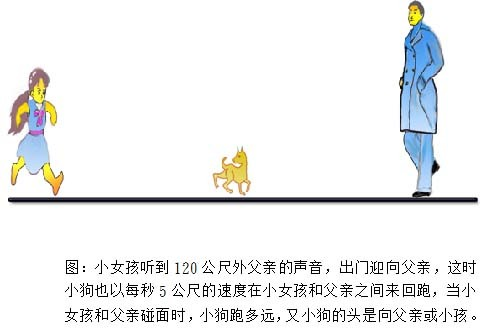

狗和主人的悖论
问题起源

这是一件家庭和乐的故事，一个小女孩听到120公尺外父亲回家的声音，赶紧走出家门迎向父亲，这时小狗瞬间冲出以每秒5公尺的速度在小女孩和父亲之间来回跑，假定小女孩以每秒2公尺，且父亲以每秒4公尺的速度互相迎面而来，请问当小女孩和父亲碰面时，小狗跑多远，又小狗的头是向父亲或小孩。
解答：
1. 简易解答：
l 小狗的方向：小狗在小女孩和父亲碰面时理论上小狗的头不是向着小女孩就是向着父亲，但我们实在无法推论小狗在小女孩和父亲碰面时，头是向小女孩或父亲。
l 小狗跑多远：我们从时间的方向来想，就很容易解决。
(1)小狗跑的时间是小女孩和父亲碰面的时间，小女孩和父亲碰面的时间是120公尺÷(2公尺/秒+4公尺/秒)=20秒
(2)小狗跑的距离是小狗跑的时间乘以小狗每秒跑的距离，即：
5公尺/秒 × 20秒 = 100公尺。
2. 正规解法，按部就班以无穷级数解法：
以无穷级数按部就班亦可解得，不过较繁复，解法如下：
假设刚开始时，小女孩和父亲距离是S0，小狗从小女孩这边跑出，父亲以Vf的速度走路，小女孩以Vg的速度走路，小狗以Vd的速度来回奔跑，则第一次小狗碰见父亲时，共跑S1距离。
(1)S1= 小狗每秒跑的速度乘以小狗跑的时间= Vd×S0/(Vd+Vf)
= S0/1+(Vf/Vd)
(2)当小狗碰见父亲时，小女孩也走了Vg ×S0/(Vd +Vf)的距离，这时小狗与小女孩的距离为：小狗跑的距离减去小女孩走的距离，即： Vd ×S0/(Vd +Vf)－Vg ×S0/(Vd +Vf) = S0 (Vd －Vg)/ (Vd +Vf)= S0 (1－Vg/ Vd)/ (1+Vf/ Vd)，设小狗从父亲那里跑回小女孩那里，共走S2的距离，则：
S2= S0× ((1－Vg/ Vd)/ (1+Vf/ Vd)) ÷(Vg +Vd )×Vd=
S0× (1－Vg/ Vd)/ (1+Vf/ Vd) ×1/(1+ Vg/ Vd)= S0×(1－Vg/ Vd)/ (1+Vf/ Vd)∙ (1+ Vg/ Vd)
(3)同理
S3= S0× (1－Vg/ Vd)∙ (1－Vf Vd)/ (1+Vf/ Vd) ∙(1+Vg/ Vd)∙(1－Vf Vd)
= S0× (1－Vg/ Vd)∙ (1－Vf Vd)/ (1+Vf/ Vd)2 ∙(1+Vg/ Vd)
(4)S4= S0× (1－Vg/ Vd)∙ (1－Vf Vd)∙ (1－Vg/ Vd)/ (1+Vf/ Vd) ∙(1+Vg/ Vd)∙(1+Vf Vd)∙ (1+Vg/ Vd)= S0× (1－Vg/ Vd)2∙(1－Vf /Vd) / (1+Vf/ Vd)2 ∙(1+Vg/ Vd)2
(5)设小狗跑的距离为S，则：
S= S1+ S2 +S3 +S4+……
设r1= (1－Vg /Vd)/ (1+Vg/ Vd)；r2=(1－Vf/ Vd) / (1+Vf/ Vd)
则：
S= S1+ S2 +S3 +S4+……
= S0/(1+ Vf/ Vd) + S0×(1－Vg/ Vd)/ (1+Vf/ Vd)∙(1+ Vg/ Vd) + S0× (1－Vg/ Vd)∙(1－Vf Vd)/ (1+Vf/ Vd)2 ∙(1+Vg/ Vd)+ S0× (1－Vg/ Vd)2∙(1－Vf /Vd) / (1+Vf/ Vd)2 ∙(1+Vg/ Vd)2
= (S0/1+( Vf/ Vd)) (1+ r1+ r1 r2+ r12 r2+ r12r22+ r13r22+ r13r3……)
= (S0/1+( Vf/ Vd))( 1+ r1) (1+r1 r2+ r12r2+ r13r3……)
=(S0/1+( Vf/ Vd))∙( 1+ r1)(1/(1- r1 r2))
=(S0/1+( Vf/ Vd))(2/(1+ Vg/ Vd)∙1/(2∙(Vg/ Vd+Vf/ Vd))= S0∙Vd/ (Vg+Vf)
小狗只要在小女孩与父亲之间任何地方开始奔跑，无论用简易算法或无穷级数算法，最后小狗所跑的距离皆为S0∙Vd/ (Vg+Vf)。但无论用简易算法或无穷级数算法我们都无法育预测小狗最后头的方向指向小女孩或父亲。